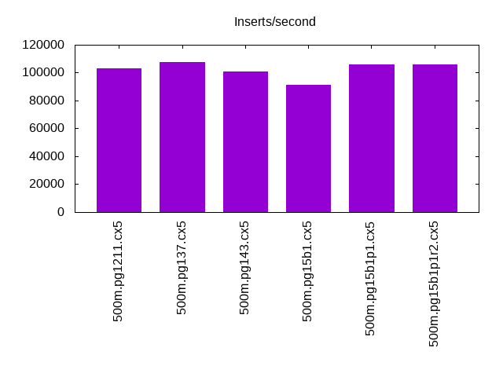
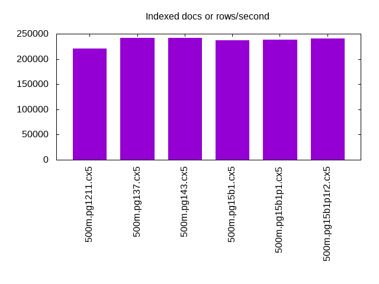
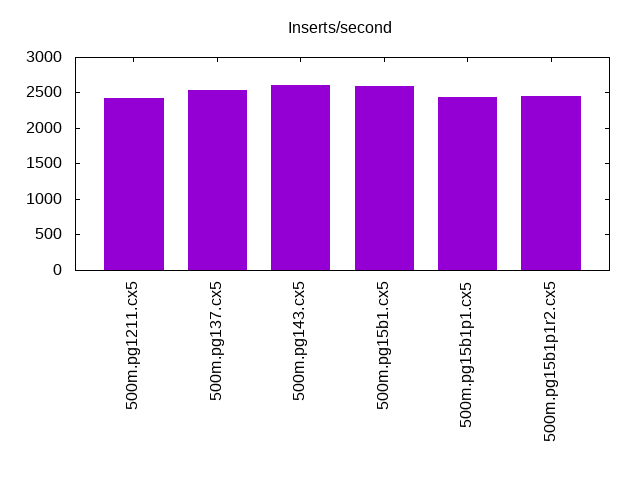
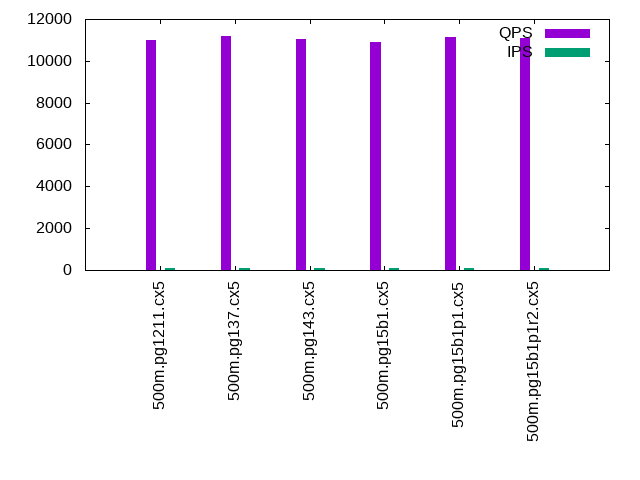
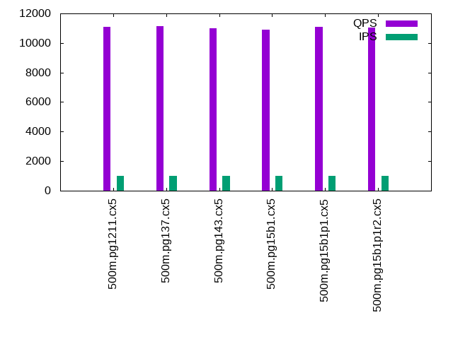

This is a report for the insert benchmark with 500M docs and 1 client(s). It is generated by scripts (bash, awk, sed) and Tufte might not be impressed. An overview of the insert benchmark is here and a short update is here. Below, by DBMS, I mean DBMS+version.config. An example is my8020.c10b40 where my means MySQL, 8020 is version 8.0.20 and c10b40 is the name for the configuration file.
The test server is an Intel NUC with 4 cores, 16G RAM and a Samsung 970 EVO. More details are here. Clients and the DBMS share one server. The per-database configs are in the per-database subdirectories here.
The tested DBMS are:
The numbers are inserts/s for l.i0 and l.i1, indexed docs (or rows) /s for l.x and queries/s for q*.2. The values are the average rate over the entire test for inserts (IPS) and queries (QPS). The range of values for IPS and QPS is split into 3 parts: bottom 25%, middle 50%, top 25%. Values in the bottom 25% have a red background, values in the top 25% have a green background and values in the middle have no color. A gray background is used for values that can be ignored because the DBMS did not sustain the target insert rate. Red backgrounds are not used when the minimum value is within 80% of the max value.
| dbms | l.i0 | l.x | l.i1 | q100.1 | q500.1 | q1000.1 |
|---|---|---|---|---|---|---|
| 500m.pg1211.cx5 | 103199 | 220697 | 2419 | 11007 | 11127 | 11072 |
| 500m.pg137.cx5 | 107619 | 242062 | 2541 | 11188 | 11190 | 11135 |
| 500m.pg143.cx5 | 100867 | 241244 | 2601 | 11059 | 11074 | 10986 |
| 500m.pg15b1.cx5 | 91025 | 236678 | 2586 | 10888 | 10945 | 10911 |
| 500m.pg15b1p1.cx5 | 106090 | 238711 | 2443 | 11138 | 11276 | 11072 |
This lists the average rate of inserts/s for the tests that do inserts concurrent with queries. For such tests the query rate is listed in the table above. The read+write tests are setup so that the insert rate should match the target rate every second. Cells that are not at least 95% of the target have a red background to indicate a failure to satisfy the target.
| dbms | q100.1 | q500.1 | q1000.1 |
|---|---|---|---|
| pg1211.cx5 | 100 | 499 | 999 |
| pg137.cx5 | 100 | 499 | 999 |
| pg143.cx5 | 100 | 500 | 999 |
| pg15b1.cx5 | 100 | 500 | 999 |
| pg15b1p1.cx5 | 100 | 500 | 999 |
| target | 100 | 500 | 1000 |
l.i0: load without secondary indexes. Graphs for performance per 1-second interval are here.
Average throughput:
Insert response time histogram: each cell has the percentage of responses that take <= the time in the header and max is the max response time in seconds. For the max column values in the top 25% of the range have a red background and in the bottom 25% of the range have a green background. The red background is not used when the min value is within 80% of the max value.
| dbms | 256us | 1ms | 4ms | 16ms | 64ms | 256ms | 1s | 4s | 16s | gt | max |
|---|---|---|---|---|---|---|---|---|---|---|---|
| pg1211.cx5 | 93.778 | 6.218 | 0.003 | 0.001 | nonzero | 0.161 | |||||
| pg137.cx5 | 97.090 | 2.902 | 0.007 | nonzero | nonzero | 0.182 | |||||
| pg143.cx5 | 82.939 | 17.055 | 0.005 | 0.001 | nonzero | 0.236 | |||||
| pg15b1.cx5 | 0.191 | 99.804 | 0.004 | 0.001 | nonzero | 0.159 | |||||
| pg15b1p1.cx5 | 96.815 | 3.178 | 0.006 | nonzero | nonzero | 0.230 |
Performance metrics for the DBMS listed above. Some are normalized by throughput, others are not. Legend for results is here.
ips qps rps rmbps wps wmbps rpq rkbpq wpi wkbpi csps cpups cspq cpupq dbgb1 dbgb2 rss maxop p50 p99 tag 103199 0 44 0.4 197.1 39.7 0.000 0.003 0.002 0.394 12310 42.4 0.119 16 47.8 55.8 0.0 0.161 103322 98792 500m.pg1211.cx5 107619 0 38 0.3 162.5 51.5 0.000 0.003 0.002 0.490 12936 43.7 0.120 16 47.8 63.0 0.0 0.182 108182 99790 500m.pg137.cx5 100867 0 41 0.3 144.2 47.2 0.000 0.003 0.001 0.479 12112 43.4 0.120 17 47.8 63.0 0.0 0.236 101221 96610 500m.pg143.cx5 91025 0 37 0.3 130.9 43.0 0.000 0.003 0.001 0.483 10963 42.5 0.120 19 47.8 63.7 0.0 0.159 91201 87871 500m.pg15b1.cx5 106090 0 42 0.4 144.3 48.1 0.000 0.004 0.001 0.464 12664 44.5 0.119 17 47.8 63.1 0.6 0.230 106583 101292 500m.pg15b1p1.cx5
l.x: create secondary indexes.
Average throughput:
Performance metrics for the DBMS listed above. Some are normalized by throughput, others are not. Legend for results is here.
ips qps rps rmbps wps wmbps rpq rkbpq wpi wkbpi csps cpups cspq cpupq dbgb1 dbgb2 rss maxop p50 p99 tag 220697 0 568 69.0 472.2 102.1 0.003 0.320 0.002 0.474 926 22.7 0.004 4 91.9 111.5 0.0 0.003 NA NA 500m.pg1211.cx5 242062 0 592 73.6 195.9 76.1 0.002 0.311 0.001 0.322 537 23.2 0.002 4 91.9 107.0 0.0 0.003 NA NA 500m.pg137.cx5 241244 0 591 73.2 194.0 75.4 0.002 0.311 0.001 0.320 533 23.1 0.002 4 91.9 108.3 0.0 0.003 NA NA 500m.pg143.cx5 236678 0 653 81.1 213.0 84.2 0.003 0.351 0.001 0.364 582 22.9 0.002 4 91.9 107.8 0.0 0.003 NA NA 500m.pg15b1.cx5 238711 0 658 81.7 219.2 86.4 0.003 0.350 0.001 0.370 585 23.3 0.002 4 91.9 107.3 0.0 0.092 NA NA 500m.pg15b1p1.cx5
l.i1: continue load after secondary indexes created. Graphs for performance per 1-second interval are here.
Average throughput:
Insert response time histogram: each cell has the percentage of responses that take <= the time in the header and max is the max response time in seconds. For the max column values in the top 25% of the range have a red background and in the bottom 25% of the range have a green background. The red background is not used when the min value is within 80% of the max value.
| dbms | 256us | 1ms | 4ms | 16ms | 64ms | 256ms | 1s | 4s | 16s | gt | max |
|---|---|---|---|---|---|---|---|---|---|---|---|
| pg1211.cx5 | 26.919 | 73.059 | 0.023 | 0.150 | |||||||
| pg137.cx5 | 32.599 | 67.334 | 0.067 | 0.148 | |||||||
| pg143.cx5 | 34.360 | 65.534 | 0.106 | 0.249 | |||||||
| pg15b1.cx5 | 35.285 | 64.651 | 0.064 | 0.122 | |||||||
| pg15b1p1.cx5 | 29.471 | 70.407 | 0.107 | 0.014 | 0.588 |
Performance metrics for the DBMS listed above. Some are normalized by throughput, others are not. Legend for results is here.
ips qps rps rmbps wps wmbps rpq rkbpq wpi wkbpi csps cpups cspq cpupq dbgb1 dbgb2 rss maxop p50 p99 tag 2419 0 3234 25.9 4107.0 65.3 1.337 10.959 1.698 27.627 7498 22.2 3.100 367 93.6 110.6 0.0 0.150 2447 1548 500m.pg1211.cx5 2541 0 3427 27.4 4312.6 68.5 1.349 11.056 1.697 27.622 7974 22.5 3.138 354 93.6 111.0 0.0 0.148 2547 1448 500m.pg137.cx5 2601 0 3496 28.0 4382.9 68.8 1.344 11.022 1.685 27.085 8019 21.0 3.083 323 93.6 113.2 0.0 0.249 2647 1298 500m.pg143.cx5 2586 0 3489 27.9 4373.3 68.6 1.349 11.067 1.691 27.178 7942 20.5 3.071 317 93.6 112.7 0.0 0.122 2647 1348 500m.pg15b1.cx5 2443 0 3309 28.3 4143.9 69.7 1.355 11.859 1.696 29.220 7603 21.6 3.112 354 93.6 113.7 0.0 0.588 2497 1149 500m.pg15b1p1.cx5
q100.1: range queries with 100 insert/s per client. Graphs for performance per 1-second interval are here.
Average throughput:
Query response time histogram: each cell has the percentage of responses that take <= the time in the header and max is the max response time in seconds. For max values in the top 25% of the range have a red background and in the bottom 25% of the range have a green background. The red background is not used when the min value is within 80% of the max value.
| dbms | 256us | 1ms | 4ms | 16ms | 64ms | 256ms | 1s | 4s | 16s | gt | max |
|---|---|---|---|---|---|---|---|---|---|---|---|
| pg1211.cx5 | 99.762 | 0.238 | 0.001 | nonzero | 0.015 | ||||||
| pg137.cx5 | 99.768 | 0.230 | 0.002 | nonzero | nonzero | 0.052 | |||||
| pg143.cx5 | 99.820 | 0.177 | 0.003 | nonzero | nonzero | 0.046 | |||||
| pg15b1.cx5 | 99.807 | 0.186 | 0.005 | 0.001 | nonzero | 0.051 | |||||
| pg15b1p1.cx5 | 99.783 | 0.211 | 0.005 | 0.001 | nonzero | 0.045 |
Insert response time histogram: each cell has the percentage of responses that take <= the time in the header and max is the max response time in seconds. For max values in the top 25% of the range have a red background and in the bottom 25% of the range have a green background. The red background is not used when the min value is within 80% of the max value.
| dbms | 256us | 1ms | 4ms | 16ms | 64ms | 256ms | 1s | 4s | 16s | gt | max |
|---|---|---|---|---|---|---|---|---|---|---|---|
| pg1211.cx5 | 85.007 | 14.993 | 0.027 | ||||||||
| pg137.cx5 | 85.292 | 14.708 | 0.037 | ||||||||
| pg143.cx5 | 96.708 | 3.292 | 0.042 | ||||||||
| pg15b1.cx5 | 96.333 | 3.667 | 0.058 | ||||||||
| pg15b1p1.cx5 | 96.257 | 3.743 | 0.062 |
Performance metrics for the DBMS listed above. Some are normalized by throughput, others are not. Legend for results is here.
ips qps rps rmbps wps wmbps rpq rkbpq wpi wkbpi csps cpups cspq cpupq dbgb1 dbgb2 rss maxop p50 p99 tag 100 11007 137 1.1 273.3 4.2 0.012 0.102 2.739 43.307 42594 28.1 3.870 102 93.7 96.0 0.0 0.015 11124 3324 500m.pg1211.cx5 100 11188 139 1.1 273.8 4.2 0.012 0.103 2.744 43.382 43289 28.2 3.869 101 93.7 96.2 0.0 0.052 11315 3279 500m.pg137.cx5 100 11059 139 1.1 325.4 4.7 0.013 0.104 3.257 48.257 42722 26.7 3.863 97 93.7 99.6 0.0 0.046 11172 4907 500m.pg143.cx5 100 10888 139 1.1 300.4 4.5 0.013 0.105 3.007 46.125 42036 26.6 3.861 98 93.7 99.6 0.0 0.051 11012 4043 500m.pg15b1.cx5 100 11138 140 1.1 341.4 4.8 0.013 0.103 3.417 49.621 42991 26.6 3.860 96 93.7 99.9 0.0 0.045 11283 3980 500m.pg15b1p1.cx5
q500.1: range queries with 500 insert/s per client. Graphs for performance per 1-second interval are here.
Average throughput:
Query response time histogram: each cell has the percentage of responses that take <= the time in the header and max is the max response time in seconds. For max values in the top 25% of the range have a red background and in the bottom 25% of the range have a green background. The red background is not used when the min value is within 80% of the max value.
| dbms | 256us | 1ms | 4ms | 16ms | 64ms | 256ms | 1s | 4s | 16s | gt | max |
|---|---|---|---|---|---|---|---|---|---|---|---|
| pg1211.cx5 | 99.978 | 0.021 | 0.001 | nonzero | 0.008 | ||||||
| pg137.cx5 | 99.978 | 0.021 | 0.001 | nonzero | 0.008 | ||||||
| pg143.cx5 | 99.974 | 0.024 | 0.001 | nonzero | 0.006 | ||||||
| pg15b1.cx5 | 99.975 | 0.024 | 0.001 | nonzero | 0.006 | ||||||
| pg15b1p1.cx5 | 99.976 | 0.022 | 0.001 | nonzero | 0.016 |
Insert response time histogram: each cell has the percentage of responses that take <= the time in the header and max is the max response time in seconds. For max values in the top 25% of the range have a red background and in the bottom 25% of the range have a green background. The red background is not used when the min value is within 80% of the max value.
| dbms | 256us | 1ms | 4ms | 16ms | 64ms | 256ms | 1s | 4s | 16s | gt | max |
|---|---|---|---|---|---|---|---|---|---|---|---|
| pg1211.cx5 | 96.850 | 3.150 | 0.063 | ||||||||
| pg137.cx5 | 96.946 | 3.053 | 0.001 | 0.069 | |||||||
| pg143.cx5 | 97.235 | 2.764 | 0.001 | 0.068 | |||||||
| pg15b1.cx5 | 96.426 | 3.569 | 0.004 | 0.080 | |||||||
| pg15b1p1.cx5 | 95.683 | 4.311 | 0.006 | 0.081 |
Performance metrics for the DBMS listed above. Some are normalized by throughput, others are not. Legend for results is here.
ips qps rps rmbps wps wmbps rpq rkbpq wpi wkbpi csps cpups cspq cpupq dbgb1 dbgb2 rss maxop p50 p99 tag 499 11127 657 5.2 1063.1 18.5 0.059 0.479 2.129 38.034 44177 28.7 3.970 103 94.6 98.8 0.0 0.008 11133 10980 500m.pg1211.cx5 499 11190 658 5.2 1064.7 18.5 0.059 0.477 2.132 37.931 44415 28.8 3.969 103 94.6 98.7 0.0 0.008 11193 11028 500m.pg137.cx5 500 11074 658 5.2 1018.8 17.7 0.059 0.483 2.040 36.347 43909 27.7 3.965 100 94.6 99.7 0.0 0.006 11076 10932 500m.pg143.cx5 500 10945 658 5.2 1019.7 17.9 0.060 0.489 2.042 36.612 43392 27.7 3.965 101 94.6 99.7 0.0 0.006 10948 10820 500m.pg15b1.cx5 500 11276 658 5.2 1015.5 17.6 0.058 0.475 2.033 36.129 44649 27.7 3.960 98 94.6 100.1 0.0 0.016 11284 11140 500m.pg15b1p1.cx5
q1000.1: range queries with 1000 insert/s per client. Graphs for performance per 1-second interval are here.
Average throughput:
Query response time histogram: each cell has the percentage of responses that take <= the time in the header and max is the max response time in seconds. For max values in the top 25% of the range have a red background and in the bottom 25% of the range have a green background. The red background is not used when the min value is within 80% of the max value.
| dbms | 256us | 1ms | 4ms | 16ms | 64ms | 256ms | 1s | 4s | 16s | gt | max |
|---|---|---|---|---|---|---|---|---|---|---|---|
| pg1211.cx5 | 99.936 | 0.062 | 0.001 | 0.001 | 0.014 | ||||||
| pg137.cx5 | 99.937 | 0.061 | 0.001 | 0.001 | 0.014 | ||||||
| pg143.cx5 | 99.929 | 0.069 | 0.002 | 0.001 | 0.007 | ||||||
| pg15b1.cx5 | 99.929 | 0.069 | 0.002 | 0.001 | 0.008 | ||||||
| pg15b1p1.cx5 | 99.932 | 0.066 | 0.002 | 0.001 | 0.007 |
Insert response time histogram: each cell has the percentage of responses that take <= the time in the header and max is the max response time in seconds. For max values in the top 25% of the range have a red background and in the bottom 25% of the range have a green background. The red background is not used when the min value is within 80% of the max value.
| dbms | 256us | 1ms | 4ms | 16ms | 64ms | 256ms | 1s | 4s | 16s | gt | max |
|---|---|---|---|---|---|---|---|---|---|---|---|
| pg1211.cx5 | 92.923 | 7.070 | 0.007 | 0.075 | |||||||
| pg137.cx5 | 92.585 | 7.401 | 0.015 | 0.095 | |||||||
| pg143.cx5 | 92.343 | 7.646 | 0.011 | 0.107 | |||||||
| pg15b1.cx5 | 88.433 | 11.551 | 0.017 | 0.089 | |||||||
| pg15b1p1.cx5 | 89.035 | 10.949 | 0.017 | 0.084 |
Performance metrics for the DBMS listed above. Some are normalized by throughput, others are not. Legend for results is here.
ips qps rps rmbps wps wmbps rpq rkbpq wpi wkbpi csps cpups cspq cpupq dbgb1 dbgb2 rss maxop p50 p99 tag 999 11072 1291 10.3 1696.4 32.3 0.117 0.952 1.698 33.103 45364 29.6 4.097 107 95.5 102.8 0.0 0.014 11076 10900 500m.pg1211.cx5 999 11135 1294 10.3 1697.4 32.3 0.116 0.948 1.699 33.104 45624 29.7 4.097 107 95.5 102.8 0.0 0.014 11140 10932 500m.pg137.cx5 999 10986 1293 10.3 1743.1 31.6 0.118 0.963 1.745 32.426 45001 28.7 4.096 104 95.5 104.5 0.0 0.007 10996 10836 500m.pg143.cx5 999 10911 1298 10.4 1741.3 31.6 0.119 0.974 1.743 32.362 44688 28.8 4.096 106 95.5 104.5 0.0 0.008 10916 10743 500m.pg15b1.cx5 999 11072 1294 10.3 1732.2 31.5 0.117 0.957 1.734 32.297 45301 28.9 4.092 104 95.5 104.5 0.0 0.007 11076 10903 500m.pg15b1p1.cx5
l.i0: load without secondary indexes
Performance metrics for all DBMS, not just the ones listed above. Some are normalized by throughput, others are not. Legend for results is here.
ips qps rps rmbps wps wmbps rpq rkbpq wpi wkbpi csps cpups cspq cpupq dbgb1 dbgb2 rss maxop p50 p99 tag 103199 0 44 0.4 197.1 39.7 0.000 0.003 0.002 0.394 12310 42.4 0.119 16 47.8 55.8 0.0 0.161 103322 98792 500m.pg1211.cx5 107619 0 38 0.3 162.5 51.5 0.000 0.003 0.002 0.490 12936 43.7 0.120 16 47.8 63.0 0.0 0.182 108182 99790 500m.pg137.cx5 100867 0 41 0.3 144.2 47.2 0.000 0.003 0.001 0.479 12112 43.4 0.120 17 47.8 63.0 0.0 0.236 101221 96610 500m.pg143.cx5 91025 0 37 0.3 130.9 43.0 0.000 0.003 0.001 0.483 10963 42.5 0.120 19 47.8 63.7 0.0 0.159 91201 87871 500m.pg15b1.cx5 106090 0 42 0.4 144.3 48.1 0.000 0.004 0.001 0.464 12664 44.5 0.119 17 47.8 63.1 0.6 0.230 106583 101292 500m.pg15b1p1.cx5
l.x: create secondary indexes
Performance metrics for all DBMS, not just the ones listed above. Some are normalized by throughput, others are not. Legend for results is here.
ips qps rps rmbps wps wmbps rpq rkbpq wpi wkbpi csps cpups cspq cpupq dbgb1 dbgb2 rss maxop p50 p99 tag 220697 0 568 69.0 472.2 102.1 0.003 0.320 0.002 0.474 926 22.7 0.004 4 91.9 111.5 0.0 0.003 NA NA 500m.pg1211.cx5 242062 0 592 73.6 195.9 76.1 0.002 0.311 0.001 0.322 537 23.2 0.002 4 91.9 107.0 0.0 0.003 NA NA 500m.pg137.cx5 241244 0 591 73.2 194.0 75.4 0.002 0.311 0.001 0.320 533 23.1 0.002 4 91.9 108.3 0.0 0.003 NA NA 500m.pg143.cx5 236678 0 653 81.1 213.0 84.2 0.003 0.351 0.001 0.364 582 22.9 0.002 4 91.9 107.8 0.0 0.003 NA NA 500m.pg15b1.cx5 238711 0 658 81.7 219.2 86.4 0.003 0.350 0.001 0.370 585 23.3 0.002 4 91.9 107.3 0.0 0.092 NA NA 500m.pg15b1p1.cx5
l.i1: continue load after secondary indexes created
Performance metrics for all DBMS, not just the ones listed above. Some are normalized by throughput, others are not. Legend for results is here.
ips qps rps rmbps wps wmbps rpq rkbpq wpi wkbpi csps cpups cspq cpupq dbgb1 dbgb2 rss maxop p50 p99 tag 2419 0 3234 25.9 4107.0 65.3 1.337 10.959 1.698 27.627 7498 22.2 3.100 367 93.6 110.6 0.0 0.150 2447 1548 500m.pg1211.cx5 2541 0 3427 27.4 4312.6 68.5 1.349 11.056 1.697 27.622 7974 22.5 3.138 354 93.6 111.0 0.0 0.148 2547 1448 500m.pg137.cx5 2601 0 3496 28.0 4382.9 68.8 1.344 11.022 1.685 27.085 8019 21.0 3.083 323 93.6 113.2 0.0 0.249 2647 1298 500m.pg143.cx5 2586 0 3489 27.9 4373.3 68.6 1.349 11.067 1.691 27.178 7942 20.5 3.071 317 93.6 112.7 0.0 0.122 2647 1348 500m.pg15b1.cx5 2443 0 3309 28.3 4143.9 69.7 1.355 11.859 1.696 29.220 7603 21.6 3.112 354 93.6 113.7 0.0 0.588 2497 1149 500m.pg15b1p1.cx5
q100.1: range queries with 100 insert/s per client
Performance metrics for all DBMS, not just the ones listed above. Some are normalized by throughput, others are not. Legend for results is here.
ips qps rps rmbps wps wmbps rpq rkbpq wpi wkbpi csps cpups cspq cpupq dbgb1 dbgb2 rss maxop p50 p99 tag 100 11007 137 1.1 273.3 4.2 0.012 0.102 2.739 43.307 42594 28.1 3.870 102 93.7 96.0 0.0 0.015 11124 3324 500m.pg1211.cx5 100 11188 139 1.1 273.8 4.2 0.012 0.103 2.744 43.382 43289 28.2 3.869 101 93.7 96.2 0.0 0.052 11315 3279 500m.pg137.cx5 100 11059 139 1.1 325.4 4.7 0.013 0.104 3.257 48.257 42722 26.7 3.863 97 93.7 99.6 0.0 0.046 11172 4907 500m.pg143.cx5 100 10888 139 1.1 300.4 4.5 0.013 0.105 3.007 46.125 42036 26.6 3.861 98 93.7 99.6 0.0 0.051 11012 4043 500m.pg15b1.cx5 100 11138 140 1.1 341.4 4.8 0.013 0.103 3.417 49.621 42991 26.6 3.860 96 93.7 99.9 0.0 0.045 11283 3980 500m.pg15b1p1.cx5
q500.1: range queries with 500 insert/s per client
Performance metrics for all DBMS, not just the ones listed above. Some are normalized by throughput, others are not. Legend for results is here.
ips qps rps rmbps wps wmbps rpq rkbpq wpi wkbpi csps cpups cspq cpupq dbgb1 dbgb2 rss maxop p50 p99 tag 499 11127 657 5.2 1063.1 18.5 0.059 0.479 2.129 38.034 44177 28.7 3.970 103 94.6 98.8 0.0 0.008 11133 10980 500m.pg1211.cx5 499 11190 658 5.2 1064.7 18.5 0.059 0.477 2.132 37.931 44415 28.8 3.969 103 94.6 98.7 0.0 0.008 11193 11028 500m.pg137.cx5 500 11074 658 5.2 1018.8 17.7 0.059 0.483 2.040 36.347 43909 27.7 3.965 100 94.6 99.7 0.0 0.006 11076 10932 500m.pg143.cx5 500 10945 658 5.2 1019.7 17.9 0.060 0.489 2.042 36.612 43392 27.7 3.965 101 94.6 99.7 0.0 0.006 10948 10820 500m.pg15b1.cx5 500 11276 658 5.2 1015.5 17.6 0.058 0.475 2.033 36.129 44649 27.7 3.960 98 94.6 100.1 0.0 0.016 11284 11140 500m.pg15b1p1.cx5
q1000.1: range queries with 1000 insert/s per client
Performance metrics for all DBMS, not just the ones listed above. Some are normalized by throughput, others are not. Legend for results is here.
ips qps rps rmbps wps wmbps rpq rkbpq wpi wkbpi csps cpups cspq cpupq dbgb1 dbgb2 rss maxop p50 p99 tag 999 11072 1291 10.3 1696.4 32.3 0.117 0.952 1.698 33.103 45364 29.6 4.097 107 95.5 102.8 0.0 0.014 11076 10900 500m.pg1211.cx5 999 11135 1294 10.3 1697.4 32.3 0.116 0.948 1.699 33.104 45624 29.7 4.097 107 95.5 102.8 0.0 0.014 11140 10932 500m.pg137.cx5 999 10986 1293 10.3 1743.1 31.6 0.118 0.963 1.745 32.426 45001 28.7 4.096 104 95.5 104.5 0.0 0.007 10996 10836 500m.pg143.cx5 999 10911 1298 10.4 1741.3 31.6 0.119 0.974 1.743 32.362 44688 28.8 4.096 106 95.5 104.5 0.0 0.008 10916 10743 500m.pg15b1.cx5 999 11072 1294 10.3 1732.2 31.5 0.117 0.957 1.734 32.297 45301 28.9 4.092 104 95.5 104.5 0.0 0.007 11076 10903 500m.pg15b1p1.cx5
Insert response time histogram
256us 1ms 4ms 16ms 64ms 256ms 1s 4s 16s gt max tag 0.000 93.778 6.218 0.003 0.001 nonzero 0.000 0.000 0.000 0.000 0.161 pg1211.cx5 0.000 97.090 2.902 0.007 nonzero nonzero 0.000 0.000 0.000 0.000 0.182 pg137.cx5 0.000 82.939 17.055 0.005 0.001 nonzero 0.000 0.000 0.000 0.000 0.236 pg143.cx5 0.000 0.191 99.804 0.004 0.001 nonzero 0.000 0.000 0.000 0.000 0.159 pg15b1.cx5 0.000 96.815 3.178 0.006 nonzero nonzero 0.000 0.000 0.000 0.000 0.230 pg15b1p1.cx5
TODO - determine whether there is data for create index response time
Insert response time histogram
256us 1ms 4ms 16ms 64ms 256ms 1s 4s 16s gt max tag 0.000 0.000 0.000 26.919 73.059 0.023 0.000 0.000 0.000 0.000 0.150 pg1211.cx5 0.000 0.000 0.000 32.599 67.334 0.067 0.000 0.000 0.000 0.000 0.148 pg137.cx5 0.000 0.000 0.000 34.360 65.534 0.106 0.000 0.000 0.000 0.000 0.249 pg143.cx5 0.000 0.000 0.000 35.285 64.651 0.064 0.000 0.000 0.000 0.000 0.122 pg15b1.cx5 0.000 0.000 0.000 29.471 70.407 0.107 0.014 0.000 0.000 0.000 0.588 pg15b1p1.cx5
Query response time histogram
256us 1ms 4ms 16ms 64ms 256ms 1s 4s 16s gt max tag 99.762 0.238 0.001 nonzero 0.000 0.000 0.000 0.000 0.000 0.000 0.015 pg1211.cx5 99.768 0.230 0.002 nonzero nonzero 0.000 0.000 0.000 0.000 0.000 0.052 pg137.cx5 99.820 0.177 0.003 nonzero nonzero 0.000 0.000 0.000 0.000 0.000 0.046 pg143.cx5 99.807 0.186 0.005 0.001 nonzero 0.000 0.000 0.000 0.000 0.000 0.051 pg15b1.cx5 99.783 0.211 0.005 0.001 nonzero 0.000 0.000 0.000 0.000 0.000 0.045 pg15b1p1.cx5
Insert response time histogram
256us 1ms 4ms 16ms 64ms 256ms 1s 4s 16s gt max tag 0.000 0.000 0.000 85.007 14.993 0.000 0.000 0.000 0.000 0.000 0.027 pg1211.cx5 0.000 0.000 0.000 85.292 14.708 0.000 0.000 0.000 0.000 0.000 0.037 pg137.cx5 0.000 0.000 0.000 96.708 3.292 0.000 0.000 0.000 0.000 0.000 0.042 pg143.cx5 0.000 0.000 0.000 96.333 3.667 0.000 0.000 0.000 0.000 0.000 0.058 pg15b1.cx5 0.000 0.000 0.000 96.257 3.743 0.000 0.000 0.000 0.000 0.000 0.062 pg15b1p1.cx5
Query response time histogram
256us 1ms 4ms 16ms 64ms 256ms 1s 4s 16s gt max tag 99.978 0.021 0.001 nonzero 0.000 0.000 0.000 0.000 0.000 0.000 0.008 pg1211.cx5 99.978 0.021 0.001 nonzero 0.000 0.000 0.000 0.000 0.000 0.000 0.008 pg137.cx5 99.974 0.024 0.001 nonzero 0.000 0.000 0.000 0.000 0.000 0.000 0.006 pg143.cx5 99.975 0.024 0.001 nonzero 0.000 0.000 0.000 0.000 0.000 0.000 0.006 pg15b1.cx5 99.976 0.022 0.001 nonzero 0.000 0.000 0.000 0.000 0.000 0.000 0.016 pg15b1p1.cx5
Insert response time histogram
256us 1ms 4ms 16ms 64ms 256ms 1s 4s 16s gt max tag 0.000 0.000 0.000 96.850 3.150 0.000 0.000 0.000 0.000 0.000 0.063 pg1211.cx5 0.000 0.000 0.000 96.946 3.053 0.001 0.000 0.000 0.000 0.000 0.069 pg137.cx5 0.000 0.000 0.000 97.235 2.764 0.001 0.000 0.000 0.000 0.000 0.068 pg143.cx5 0.000 0.000 0.000 96.426 3.569 0.004 0.000 0.000 0.000 0.000 0.080 pg15b1.cx5 0.000 0.000 0.000 95.683 4.311 0.006 0.000 0.000 0.000 0.000 0.081 pg15b1p1.cx5
Query response time histogram
256us 1ms 4ms 16ms 64ms 256ms 1s 4s 16s gt max tag 99.936 0.062 0.001 0.001 0.000 0.000 0.000 0.000 0.000 0.000 0.014 pg1211.cx5 99.937 0.061 0.001 0.001 0.000 0.000 0.000 0.000 0.000 0.000 0.014 pg137.cx5 99.929 0.069 0.002 0.001 0.000 0.000 0.000 0.000 0.000 0.000 0.007 pg143.cx5 99.929 0.069 0.002 0.001 0.000 0.000 0.000 0.000 0.000 0.000 0.008 pg15b1.cx5 99.932 0.066 0.002 0.001 0.000 0.000 0.000 0.000 0.000 0.000 0.007 pg15b1p1.cx5
Insert response time histogram
256us 1ms 4ms 16ms 64ms 256ms 1s 4s 16s gt max tag 0.000 0.000 0.000 92.923 7.070 0.007 0.000 0.000 0.000 0.000 0.075 pg1211.cx5 0.000 0.000 0.000 92.585 7.401 0.015 0.000 0.000 0.000 0.000 0.095 pg137.cx5 0.000 0.000 0.000 92.343 7.646 0.011 0.000 0.000 0.000 0.000 0.107 pg143.cx5 0.000 0.000 0.000 88.433 11.551 0.017 0.000 0.000 0.000 0.000 0.089 pg15b1.cx5 0.000 0.000 0.000 89.035 10.949 0.017 0.000 0.000 0.000 0.000 0.084 pg15b1p1.cx5